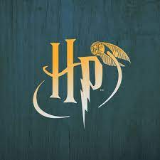

La saga de Harry Potter vuelve a estar en el candelero. El nuevo reboot anunciado por Warner para su nueva plataforma Max (que sustituye a HBO Max) adaptará otra vez los seis libros originales escritos por JK Rowling. Como sucede con 'El Señor de los Anillos', ver tanto en orden cronológico como en orden de estreno las películas no ofrece demasiadas complicaciones, la verdad, pero hay ciertos detalles que conviene tener en cuenta. Aunque cronológicamente no sea la forma correcta, es el modo más sencillo de introducirse en el mundo de Harry Potter. ¿Por qué? Bueno, tenemos aquí dos grandes bloques: por una parte las ocho películas protagonizadas por Daniel Radcliffe. Por otra, la saga 'Animales fantásticos'. Aunque cronológicamente las tres películas de esta última van antes, la saga de películas originales nos introducen de nuevas en el mundo mágico de Hogwarts y sus reglas, así que es perfecta como introducción. Y luego está el orden cronológico de la historia que arranca con lo que cuenta 'Animales Fantásticos'. El argumento de estas tres películas nos lleva unos setenta años antes de lo que se veía en 'La piedra filosofal', además de cambiar de ambientación: de Reino Unido a Estados Unidos, concretamente a Nueva York. Conoceremos a un nuevo mago, Newt Scamander, y la relación con la saga original de Harry Potter se estrecha con la aparición de una versión juvenil de Dumbledore, entre otros detalles de fan-service.
